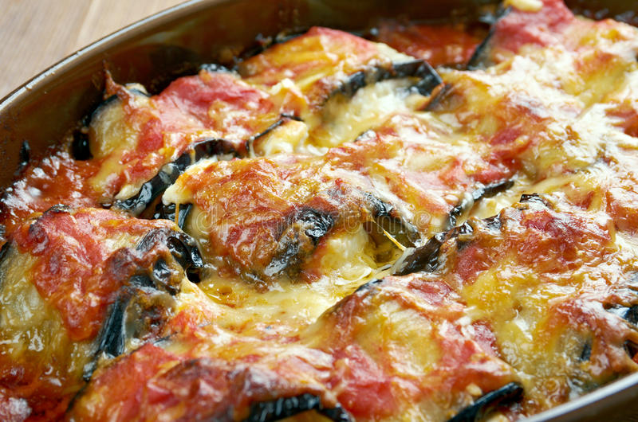

Eggplant Rollatini

The meal you need if you want to impress your vegeterian friends
This particular eggplant rollatini is prepared just the way the italians like it. Eggplant
rollatini is an awesome meal you can use to impress your vegeterian friends. You can also
enjoy it yourself if you're looking to indulge in some guilty pleasures.
Ingredients
- 2 Eggplants, cut lengthwise into 1/4 inch slices
- Kosher salt to taste
- 1 pinch of ground black pepper
- 4 cups fresh spinash
- 1/2 onion, chopped
- 1 clove garlic, minced, or more to taste
- 1 teaspoon italian seasoning, or to taste
- 1 cup grated Parmigiano-Reggiano cheese
- 1/2 cup ricotta cheese
- 1.5 cup marinara sauce
- 1 cup shredded mozarella cheese
Recipe instructions
- Preheat oven to 400 degrees F (200 degrees C). Line a baking sheet with parchment paper.
- Sprinkle kosher salt over eggplant slices. Let excess moisture drain from eggplant, 10 to 15
minutes. Pat dry with paper towels and transfer to baking sheet.
- Bake in the preheated oven until softened, 8 to 10 minutes. Remove from oven and sprinkle with black pepper.
- Combine spinach, onion, and garlic in a saucepan over medium-low heat; cook and stir until
spinach is wilted, 3 to 5 minutes. Season with Italian seasoning.
- Mix Parmigiano-Reggiano cheese and ricotta cheese together in a bowl. Stir in spinach mixture until well-combined.
- Spread 2 spoonfuls of spinach mixture evenly over each eggplant slice. Roll up eggplant.
- Spread 1/4 cup marinara sauce in the bottom of a 9x13-inch baking dish. Arrange eggplant rolls
seam-side down in the dish. Pour remaining marinara sauce over rolls. Cover with mozzarella cheese.
- Bake in the preheated oven until bubbly and golden, about 1 hour. Cool for 5 to 10 minutes before serving.